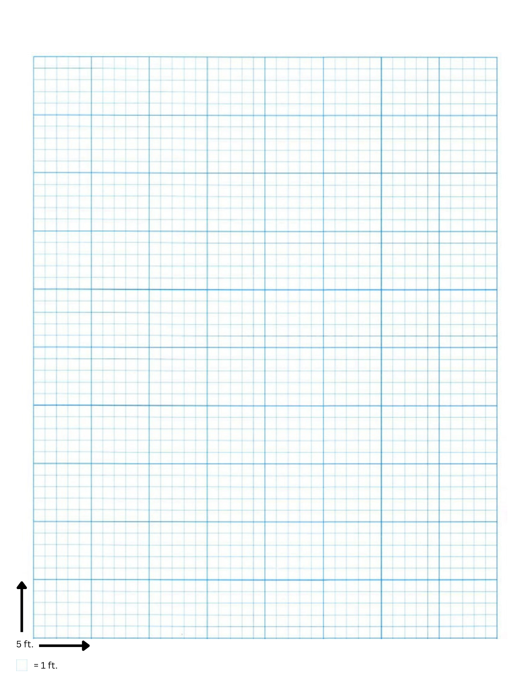

In the Box
| Component | Description |
|---|---|
| Basic Rules Pamphlet | The Basic Rules come as paperbacks in the box set. Hard cover and pdf online forms are also available. |
| GM Codex Pamphlet | A small paperback version of the GM Codex providing rules and instructions for GMs is included with the Basic Rules. |
| Character Sheet | A sheet that holds all of the Character's personal information, such as name, race, gender, culture, key stats and character details. See Character Sheet for the interactive Sheet. |
The following sheets come in the form as color coded 5 in. x 7 in. tear-away glue bonded booklets. | |
| Journal | A journal that captures a character's background story, mission, personal notes, quest logs, and important memories. It helps track a character's narrative development, locations, landmarks, and world interactions as their story unfolds. Lore is a category of pages within it, not a separate sheet. See Journal itself. |
| ATTR Repository | A standalone sheet, separate from the Character Sheet, used to log every Character Level's roll, where each Remnant (REM) PTS went, ATTR SCR, a TST, or banked as a Remnant, and the running Remnants total per ATTR. See the Character Repository itself. |
| Home & Family Booklet | A standalone sheet tracking properties and plots a character owns (campgrounds, complexes, homes, estates, farms), the rooms and storage within them, and family members. See the Home & Family Booklet itself. |
| Combat - Actions Booklet | This booklet provides quick references to tracking stats while in Combat. It is designed to work in conjunction with Armament and Class Ability Cards.Combat. |
| Talents - Action Booklet | This booklet is designed to assist players in management of their Talents , both during and out of combat.Talents. |
| Skills - Action Booklet | Skills are Profession based actions performed during a Character's down time.Skills. |
| SORC Cards | Players use a comprehensive Card-based system to track their Abilities, Armaments (and their enhancements) and Companions. Each Card Type has its own layout, Stat and Conditions. Refer to SORC Cards for details. |
| Vitality Chips | Stackable chips in four colors: Life (red), Mana (blue), Stamina (yellow), Endurance (green). Add or remove chips at the table as they're spent, regenerated, determined by Spirit, or changed by an effect like a HoT, DoT, or Channel spell. Note: When using the PDF version, any token or coin can be used in place of the Chips. |
| Ability Reset/Recharge Chips | A fifth chip color, placed on an Ability Card to track its Cooldown (CD) or Recharge (RECHRG) status. Add or remove chips as they reset, no math at the table. See How to Read a Card. |
| Encounter Tokens | Used to track the number of entries in an Encounter. See Encounter Tokens for details. Not the same component as Ability Reset/Recharge Chips above. |
| 5 x 5 Graph Paper | The play surface for combat, movement and mapping. Each big square is five feet, with each small square representing one foot. Draw the encounter on it, place the party, and read distance straight off the grid. |
